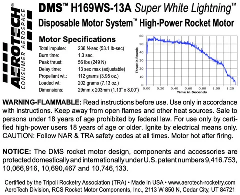

Structured vehicle trade study and propulsion selection supporting NAR Level 1 certification, with planned aerodynamic refinement via CFD.
This effort supports National Association of Rocketry (NAR) Level 1 High Power Certification through structured vehicle selection, propulsion evaluation, and trajectory modeling.
Rather than selecting a certification platform solely on availability, a controlled trade study was conducted to evaluate multiple commercially available kit rockets under a common propulsion configuration. The objective was to select a vehicle providing sufficient apogee margin, safe deployment conditions, and flexibility for aerodynamic modification while remaining above a 2200 ft certification target altitude.
Modeling Tools: OpenRocket (6-DOF trajectory simulation), SolidWorks Flow Simulation (planned CFD analysis)
All candidate vehicles were simulated using the AeroTech H169WS composite motor to ensure propulsion consistency across the trade space. The H169WS falls within Level 1 impulse limits while providing a strong thrust-to-weight ratio suitable for stable rail departure and predictable ascent dynamics.
The motor’s thrust curve provides a short-duration, high-thrust boost phase followed by sustained impulse delivery, balancing rapid rail exit velocity with manageable structural loading.
 Manufacturer thrust curve and performance data for AeroTech H169WS.Three commercially available kit rockets were modeled and compared:
Each vehicle was simulated under identical environmental assumptions, launch rail conditions, recovery configurations, and propulsion parameters. This ensured that performance differences were attributable to geometric and aerodynamic characteristics rather than modeling variance.
The table below summarizes simulation outputs for each candidate vehicle. Quantitative values will be inserted following final validation runs.
| Vehicle | Velocity Off Rail (ft/s) | Apogee (ft) | Max Velocity (ft/s) | Max Accel (ft/s²) | Time to Apogee (s) | Total Flight Time (s) | Ground Impact Velocity (ft/s) |
|---|---|---|---|---|---|---|---|
| YIRIS 338 | 59.1 | 2310 | 479 | 515 | 11.3 | 84.1 | 22.7 |
| Kronos | 74.5 | 2258 | 701 | 863 | 7.26 | 139 | 17.9 |
| HI-TECH PK-56 (Selected) | 80.0 | 3170 | 804 | 974 | 11.7 | 113 | 21.3 |
Full-flight trajectory outputs were reviewed for each candidate configuration to assess ascent profile, peak velocity timing, coast phase duration, and recovery deployment conditions.
Plots below show altitude, velocity, and acceleration histories as generated by OpenRocket under identical launch assumptions.
Time-history analysis confirmed that the HI-TECH PK-56 maintains favorable ascent stability, moderate peak acceleration loading, and predictable deployment timing relative to motor burnout.
Among the evaluated configurations, the HI-TECH PK-56 demonstrated the highest predicted apogee while maintaining acceptable peak acceleration and recovery velocities.
The additional altitude margin above the 2200 ft requirement provides controlled flexibility for aerodynamic modification, specifically fin geometry adjustments intended to reduce total flight time while preserving certification altitude compliance.
Based on quantitative performance margin and modification potential, the HI-TECH PK-56 was selected as the Level 1 certification platform. The kit has been ordered, and launch is scheduled for April 4th.
Following baseline validation, SolidWorks Flow Simulation will be used to estimate drag coefficient sensitivity to fin planform modifications.
The objective of this phase is to:
CFD-informed drag adjustments will be re-integrated into the OpenRocket trajectory model to quantify system-level performance impact prior to launch.
Post-flight data (altitude, acceleration profile, and descent rate) will be compared against predicted simulation outputs to evaluate model fidelity and refine drag and mass distribution assumptions.
This closed-loop modeling and validation process supports iterative improvement of simulation accuracy for future vehicle development.
Baseline propulsion selection and vehicle trade study are complete. Certification launch is scheduled for April 4th. CFD refinement and final configuration validation are in progress.